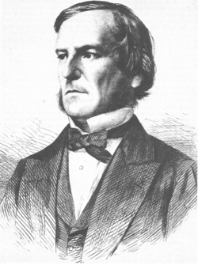

George Boole był angielskim matematykiem i filozofem, żył w latach 1815-1864, wszystkiego nauczył się sam. Głównie matematyki, wykładał w Queen’s College w mieście Cork położonym w Irlandii.
Wymyślił system logiczny oparty na wartościach 0 i 1 oraz stworzył absolutną podstawę współczesnej informatyki.
Pokazał, że logika może być przedstawiona jako matematyka, co umożliwiło budowę układów elektronicznych działających na 0/1.
Źródła / Materiały dodatkowe:
„Matematyka jest językiem, którym Bóg opisał wszechświat.”
Więcej informacji znajdziesz na Wikipedii George'a Boole'a.